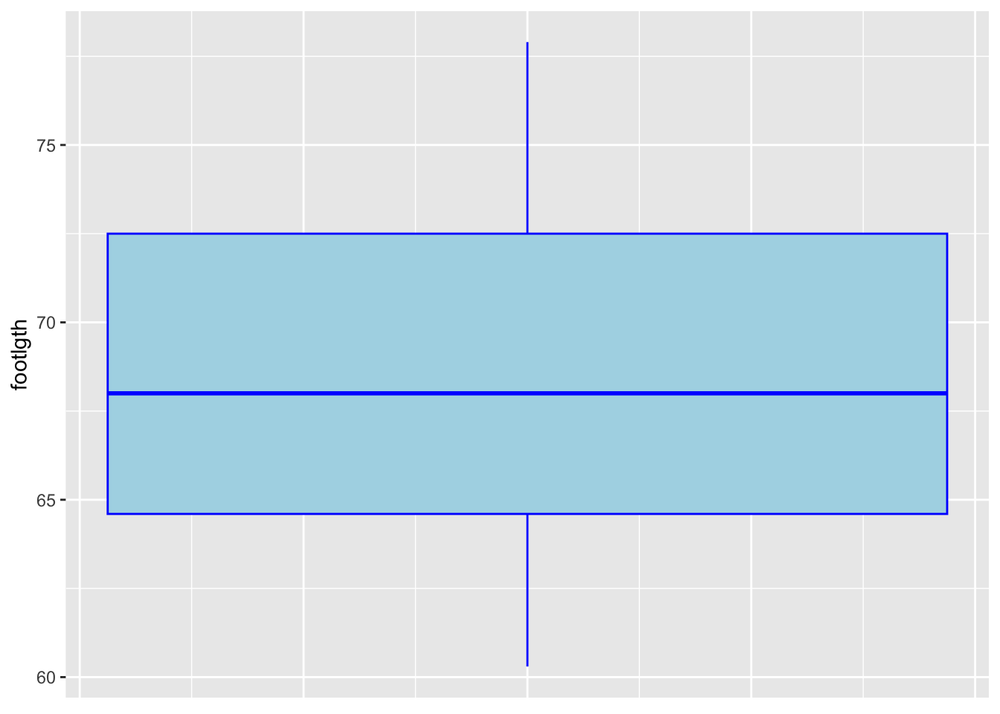
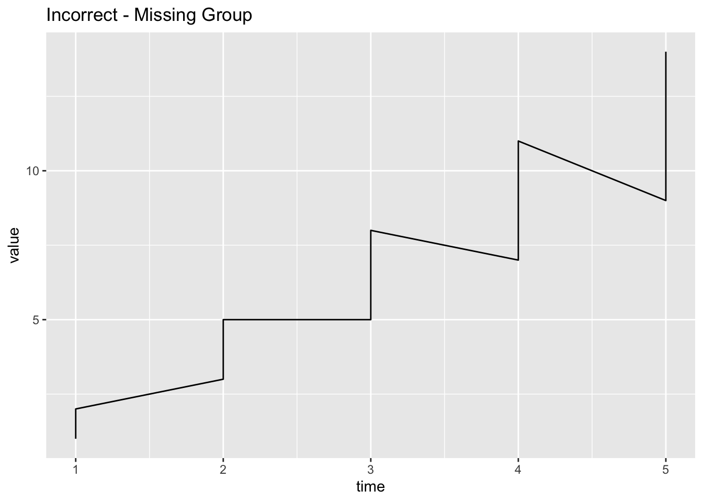
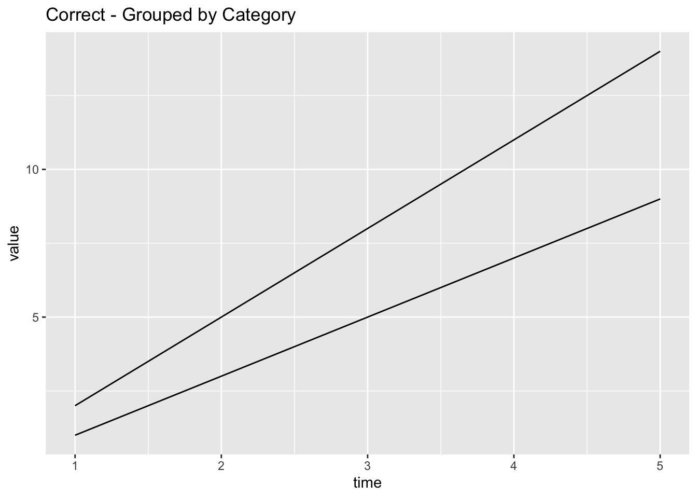
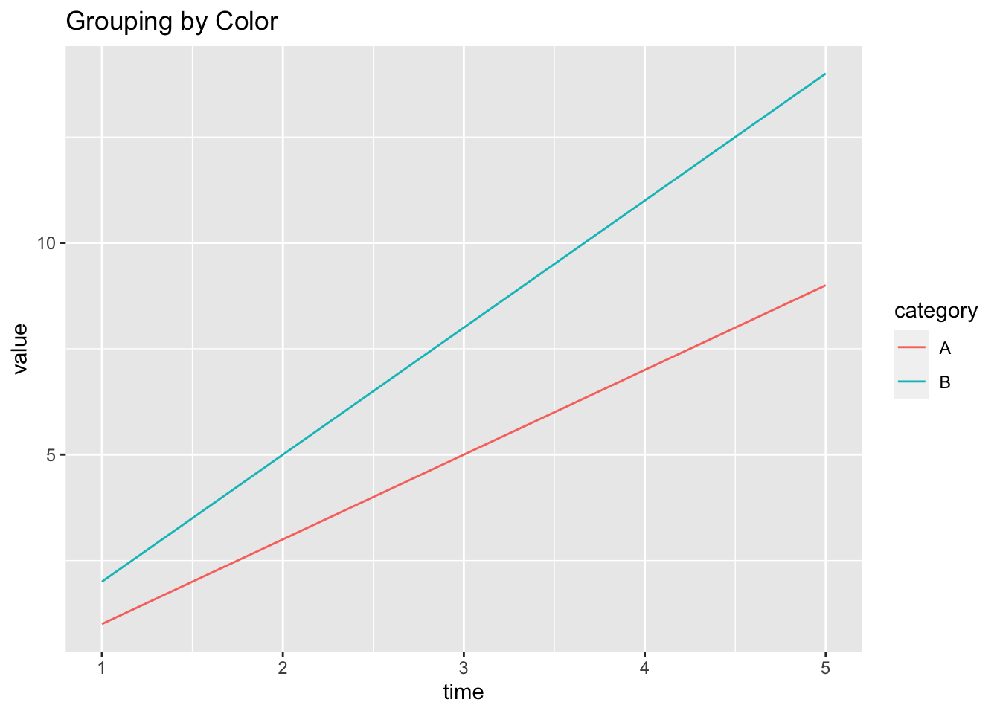

# load packages
library(tidyverse)Making plots with ggplot2: histograms, boxplots, line graphs
possum data
The possum data frame consists of nine morphometric measurements on each of 104 mountain brushtail possums, trapped at seven Australian sites from Southern Victoria to central Queensland.
There are two different populations (pop): Vic (Victoria) and other (New South Wales or Queensland)
#Be sure to install the DAAG package if you've never used it before...
library(DAAG)
data("possum")Histograms
Tip
Histograms are great for looking at the distributions of numeric variables
A boxplot for the foot length (footlgth) of all possums in this dataset:
You can also customize by color:
Some people prefer to use geom_density for a smoother effect:
Boxplots
Tip
Boxplots are good for displaying the spread, central tendency, and distribution of one numeric variable.

A lone box-plot for one numeric variable (foot length) with some custom colors:
If only one boxplot, it puts weird numbers on the x axis, you may want to use the theme to hide these numbers.
ggplot(possum, aes(y = footlgth)) +
geom_boxplot(color = "blue", fill = "lightblue") +
theme(
axis.text.x = element_blank(), # Hide text
axis.ticks.x = element_blank(), # Hide tick marks
axis.title.x = element_blank() # Hide axis title
)
Tip
Side-by-side boxplots are good for displaying one categorical variable and one numeric variable. One advantage of boxplots over bar plots is that they are able to show a bit about the spread and distribution of the numeric variable!
A side-by-side boxplot to compare the foot lengths between the two populations of possums:
# same color for both boxplots
# different color for both boxplotsLine Graph
This dataset was produced from US economic time series data available from https://fred.stlouisfed.org/. Type ? economics to learn more.
data("economics")Create a line plot with the unemployment rate of the US over time:
Tip
In ggplot2, you use the group aesthetic in a geom_line() plot when you need to explicitly tell R how to group data points together into lines.
🌶️ Spicy alert: I am creating a dataset here using some techniques that might be new to you. Don’t worry so much about how I created the dataset, you should focus on what the dataset looks like.
# Example dataset
df <- data.frame(
time = rep(1:5, 2),
value = c(1, 3, 5, 7, 9, 2, 5, 8, 11, 14),
category = rep(c("A", "B"), each = 5)
)
df time value category
1 1 1 A
2 2 3 A
3 3 5 A
4 4 7 A
5 5 9 A
6 1 2 B
7 2 5 B
8 3 8 B
9 4 11 B
10 5 14 BWithout the needed group command
# Incorrect: Only one line drawn without group
ggplot(df, aes(x = time, y = value)) +
geom_line() +
ggtitle("Incorrect - Missing Group")
With the group command
# Correct: Separate lines for each category using group
ggplot(df, aes(x = time, y = value, group = category)) +
geom_line() +
ggtitle("Correct - Grouped by Category")
Using color (or linetype) instead
# Automatically groups by color
ggplot(df, aes(x = time, y = value, color = category)) +
geom_line() +
ggtitle("Grouping by Color")